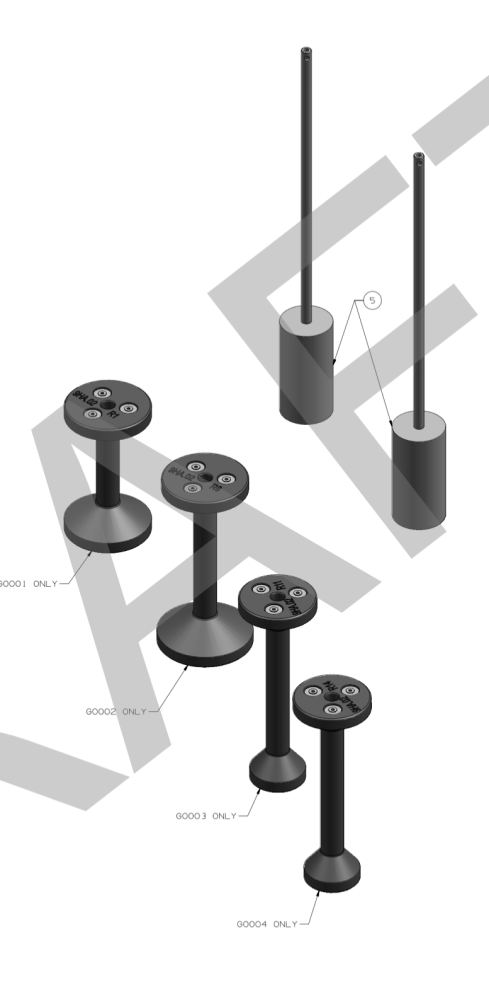
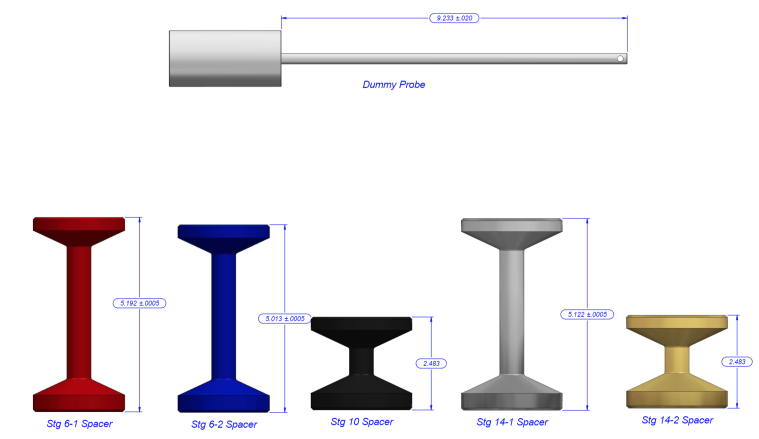
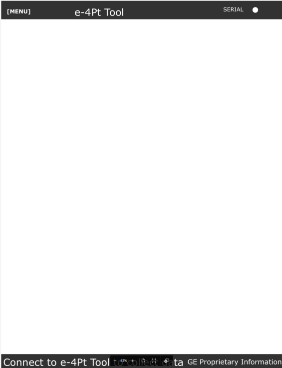
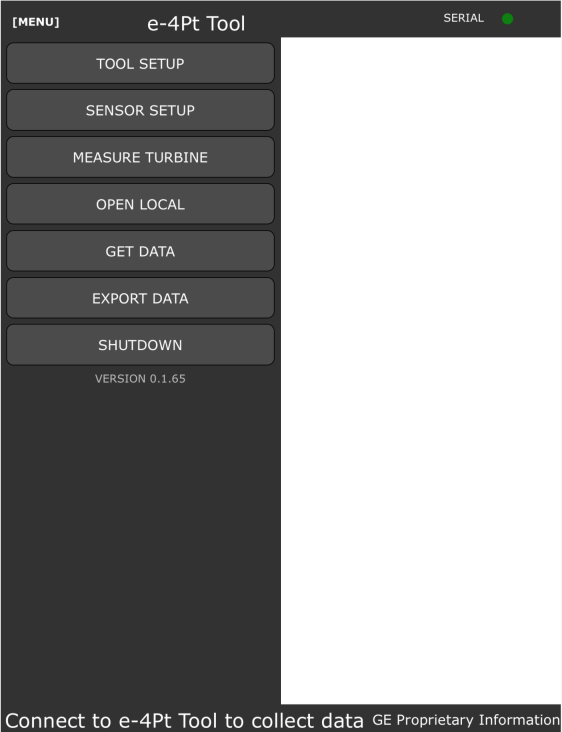
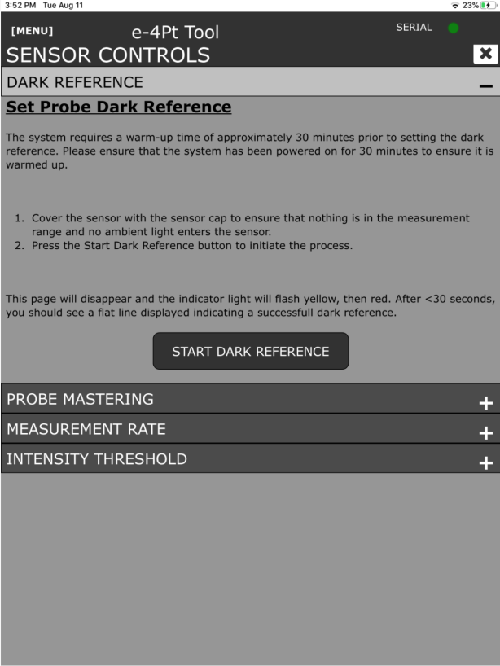
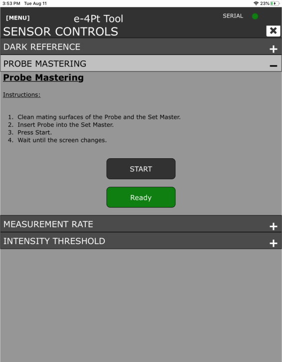
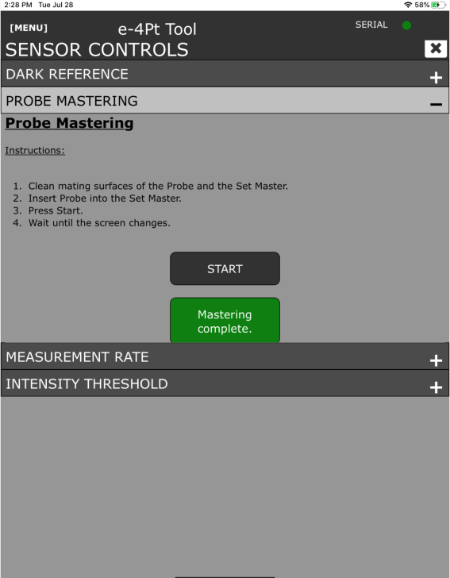
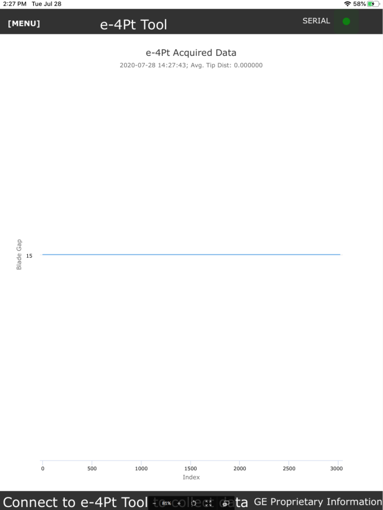

All- Sensor and Controller are calibrated as a unit. Cannot interchange without proper calibration
RedPark Cable
All
Mastering Fixture
Sensor Specific
Dark Reference Cap
Sensor Specific
Dummy Probe
Sensor and Frame specific
Spacer Kits
840-90-04
7FA+e
840-90-07
9FA
840-90-11
9FB
840-90-12
7FB
840-90-13
6FA
840-90-14
6B
132T7353
9HA.02
134T1087
9HA.01
134T1082
7FA.05
134T1088
7HA.01
134T1089
7HA.02
134T1089
7HA.03
Long Mastering Fixture with Long probe 7FA+e Spacers and Dummy Probe 9FA Spacers and Dummy Probes 9FB Spacers and Dummy Probes 7FB Spacers and Dummy Probe 6FA Spacers and Dummy Probe 6B Spacers and Dummy Probe

9HA.02 Spacers and Dummy Probe

7HA.01 Spacers and Dummy Probe 7HA.02-16 Spacers and Dummy Probe 7HA.02-18 R10 and R14 DWC Spacer
Environmental use and cleaning
Cleaning Instructions:
The base station, sensor, and cabling are NOT considered submergible or waterproof. To clean the external features and spacers, use a lint free cloth dampened with water or light duty general purpose cleaner. Wipe residue free and wipe excess liquid. Do not close lid to case before surfaces are dry.
Dry Cleaning: wipe the face of the sensor lens with an optics anti-static lint-free brush or cloth or blow with dehumidified, clean, oil-free compressed air.
Wet Cleaning: Use a clean soft, lint-free cloth or lens cleaning paper with pure alcohol (isopropyl)
Pre Set-Up – tool inspection, verify GT assembly configuration.
Set up base station.
Remove all clearance hole plugs, including inner casing plugs and clean area around plug hole to ensure proper magnetic mating and FOD prevention into turbine.
Ensure rotor is on Turning gear or otherwise rotating with Lift Oil if required. Note shaft RPM.
Install stage and frame specific spacer into clearance probe holes and verify NO sensor interference with turbine blades by inserting the dummy probe. Ensure rotor rotates through multiple airfoils before removing dummy probe to ensure no interference with the turbine blades.
Failure to check gross clearance with the Dummy Probe can result in sensor decapitation and FOD introduction to the turbine.
Install sensor into spacer.
Follow e4 Point App process for measuring a turbine for specific stage and location.
When data has been recorded for current location, measurement can then be performed at next location on the same stageby performing the above procedure from step 5.2.5.
When all locations for current stage have been measured repeat procedure for next stage starting with step 5.2.5.
The correct spacer must be used for each stage. Failure to use correct spacer can cause sensor decapitation, FOD introduction to the turbine, or failure to accurately measure clearances.
When all stages and locations have been measured load all raw data files to GE Box.
Generate the customer report and load to GE box and send to customer if applicable.
Disassemble tool and package back into appropriate containers.
E4 point Tool Inspection
Verify all the parts listed above are in the kit and appear to be in good condition. Only spacers for desired frame will be included in shipped kit. Dark Reference cap should fit snuggly over sensor tip. Mastering fixture should be clear of debris or blockages. The magnets should not be cracked or broken on either the sensor or spacers.
Electrical and sensor connections should be clear of debris.
System Test
Follow the procedure in section 5.2 to set up the unit and verify connectivity with the sensor.
An iPad or iPhone with GE mobile Iron installed is required in order to install the e4Point tool from the GE Apps Store.
Gas Turbine Setup
The upper GT cases are installed and fully torqued - All cases must be installed and tensioned including the mini-case.
All Clearance probe plugs are removes and surfaces cleaned, including inner compressor case/Double Wall Casing Plugs.
Lift oil and turning gear
The rotor will need to be turned between 0.5 -15 RPM using the turning gear or some other method that will turn the rotor at a constant speed. (Some sites have used an air motor attached to the manual input on the turning gear.)
The rotor will also need to be on lift oil.
(Note that it is possible that the measurement of the rotor lift due to lift oil will be needed and the deviation will need to be included on the alignment diagram.)
Some sites do not have lift oil; in this case, consult the MLI 0404 for that target without lift oil. (nearly every site will use lift oil, currently only a few early 7HA01 sites do not have lift oil)
Download the “e4 Point” app from the GE app store to a GE iPad or iPhone.
Connect the fiber optic cable to the controller. Connect the RedPark power Cable to the Redpark Power supply on the Base Station and the RedPark Serial Adapter to the controller. Connect Base station power supply cable to the Base Station and to a 120V power source.
Position the base station near the gas turbine compressor section. Keep in mind that the sensor cable, Redpark Cables, and Power Cables constitute a tripping hazard. Care should be made to position the base station close to the compressor casing. Additionally, the Fiber Optic cable has a 3x maximum radius and should never be kinked.
Power on the Base station (120/220 Vac, 50/60Hz). An adaptor may be needed. Turn the base station on by flipping the single rocker switch.
Connect iPad or iPhone to the armored lightning cable, and then open the e4 point App. You can confirm that the app has connected via the SERIAL indicator circle in the top right corner of the app. The indicator circle should be GREEN as shown below.
Sensor and controller warmup time is 30 minutes. Measurement prior to 30 minute warm up period will result in erroneous dark reference, mastering, and clearance data.
Good practice is to set up and turn on the e4 point tool and then remove clearance hole plugs and note casing thicknesses. While this may not take full 30 minutes, it will reduce idle time.
Once 30 minute warm up time has elapsed open the Menu page and select “Sensor Setup” Submenu.


Ensure the dark refence cap is snuggly fit over the end of the sensor and then select the “Dark reference” submenu. Follow the on-screen instructions to perform dark-referencing of the sensor.

Remove dark reference cap from sensor. Clean the sensor mating surfaces and lens as directed above and carefully insert the sensor into the mastering fixture.
Select “Probe Mastering” from the submenu and follow on screen instructions for mastering the sensor. When Mastering has been completed the green “Ready Button” will transition to “Mastering Complete.”


Verify that sensor mastering is acceptable by navigating to the main menu and selecting the “Get Data” submenu. Collect data for a short amount of time with the probe still placed in the mastering fixture. The display should be a constant line at 15mm.

The sensor is now ready to use. Do not turn power off until all measurements are complete, data has been saved to GE Box, and a Customer report has been generated.
Note:The Mastering Value is currently hard-coded in the app at 5mm, so changing it here does not result in any effect on the readings.
Note:The Master Offset is the delta calculated: (measured sensor length + 16mm) - measured mastering fixture height. This needs to be adjusted whenever there is a change in the sensor length OR mastering fixture height OR both.
Before collecting data be sure to master the sensor.
Mastering in the mastering fixture sets the value of the target distance for the calculation of the clearance. The mastering fixture is machined to hold the sensor so that the base surface of the fixture (target surface) is at the center of the sensor measuring range.
Instructions:
Clean mating surfaces of the Probe and the Set Master.
Insert Probe into the Set Master.
Press Start.
Wait until the screen changes.
START
READY
When collecting data on the next page, the user is prompted for the rotor RPM. RPM is used to optimize the data acquisition rate to ensure at least 4 points are acquired per blade tip. It is best to estimate within +/- 1rpm if possible.
COLLECT DATA
GO!
RESET
REPORT
EXPORT
DETAILS
SENSOR CONTROLS
Set Probe Dark Reference
Dark referencing smooths out the signal output because it acquires the sensor brightness at this specific point in time. It is critical the sensor be covered with a cap and in a fully dark pocket. This step is needed every time the tool is plugged in or power cycled, or if the data is showing noise. If the dark reference fails, it is likely the sensor or connection is contaminated.
The system requires a warm-up time of approximately 30 minutes prior to setting the dark reference. Please ensure that the system has been powered on for 30 minutes to ensure it is warmed up.
Cover the sensor with the sensor cap to ensure that nothing is in the measurement range and no ambient light enters the sensor.
Press the Start Dark Reference button to initiate the process.
This page will disappear and the indicator light will flash yellow, then red. After <30 seconds, you should see a flat line displayed indicating a successfull dark reference.
START DARK REFERENCE
Probe Mastering
Mastering in the mastering fixture sets the value of the target distance for the calculation of the clearance. The mastering fixture is machined to hold the the sensor so that the base surface of the fixture (target surface) is at the center of the sensor measuring range.
Instructions:
Clean mating surfaces of the Probe and the Set Master.
Insert Probe into the Set Master.
Press Start.
Wait until the screen changes.
START
READY
Set Sensor Measurement Rate
The sampling rate may be set in kHz between 0.100 and 6.500. A maximum of 3 decimal places may be specified.
Measurement Rate
kHz
SET MEASUREMENT RATE
Set Intensity Threshold
The intensity threshold is a percentage and may be set between 0.5% and 100%.